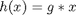
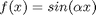
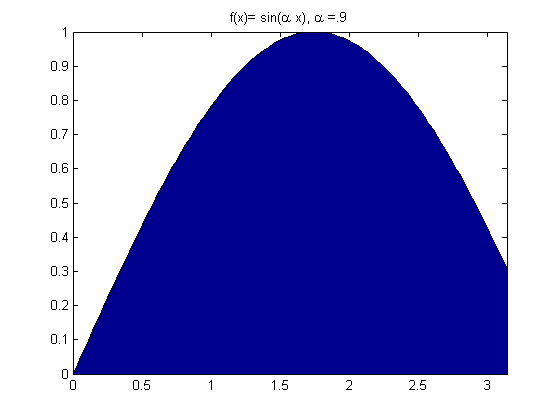
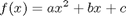
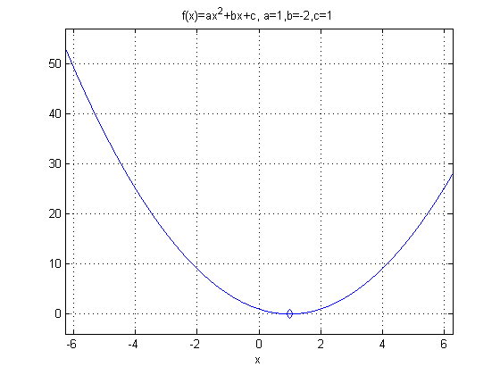
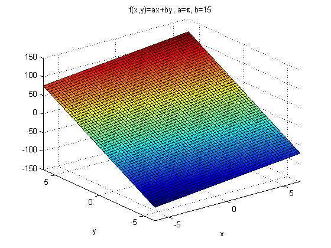

Anonymous Functions
This demo shows some examples of how to define functions at the command line in a new much simpler way than with the inline function.
Contents
Integrating a Function
Consider the function 10*x.

If we want to allow any multiplier of x, not just 10, we might create a variable g (where g is initially set to 10), and create a new function

Let's do this in MATLAB® by creating a function handle h.
g=10; h=@(x) g*x;
You can integrate the function by passing its handle to quad.
quad(h,1,10)
ans = 495
Consider another function:

Create a function handle to this function where alpha = 0.9.
alpha=0.9; f=@(x) sin(alpha*x);
Plot the function and shade the area under it.
x=0:pi/100:pi; area(x,f(x)); % You can evaluate f without feval title('f(x)= sin(\alpha x), \alpha =.9');
We can use quad to calculate the area under the function between a range of values.
quad(f,0,pi)
ans =
2.1678
Minimizing a Function
Consider the function:

where a=1, b=-2, and c=1
Create a function handle for it.
a=1;b=-2;c=1; f=@(x)(a*x.^2+b*x+c);
ezplot(f); % Plot the function title('f(x)=ax^2+bx+c, a=1,b=-2,c=1'); hold on; % Find and plot the minimum minimum=fminbnd(f,-2,2); % We can pass the function handle direct to the minimization routine plot(minimum,f(minimum),'d'); % We can evaluate the function without using feval grid; hold off;
2D Functions
We can create handles to functions of many variables
a=pi;b=15;
f=@(x,y) (a*x+b*y);
ezsurf(f);
title('f(x,y)=ax+by, a=\pi, b=15');
 Function Composition
We can also create handles to functions of functions
f=@(x) x.^2; g=@(x) 3*x; h=@(x) g(f(x)); h(3)
ans =
27